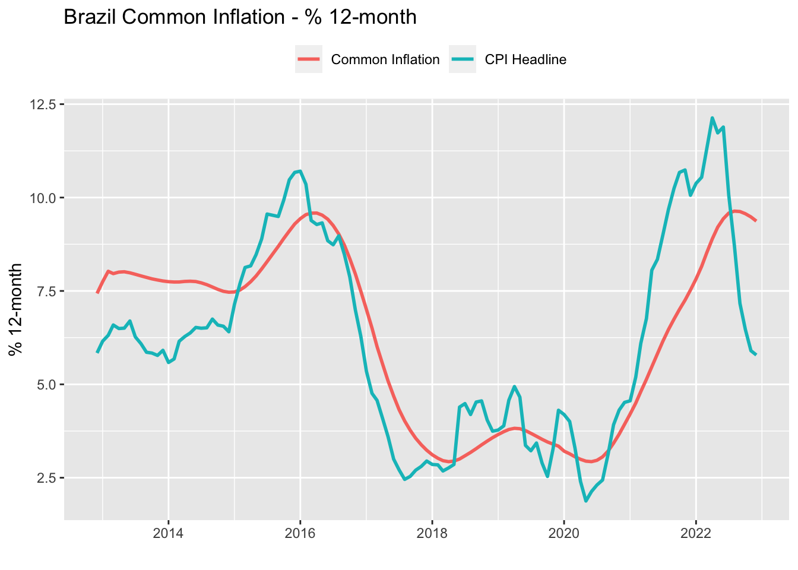

11 Dynamic Factor Model
Policymakers and analysts are routinely seeking to characterize short-term fluctuation in prices as either persistent or temporary. This issue is often addressed using core measures that exclude those items that are the most volatile or most subject to supply shocks from the inflation index. Eli, Flora, and Danilo (2021) argue that core measures are imperfect measures of underlying inflation in that temporary shocks in sectors that were not filtered out from the index may be misunderstood as economy-wide shocks.
The authors propose an alternative measure to deal with this problem. In their words:
“The basic assumption is that each component of the inflation index combines two driving forces. The first is a trend that is common across all components. The second comes from idiosyncratic components that capture one-off changes, sector-specific developments, and measurement errors.”
In fact, this idea is represented by a special class of State-Space models known as Dynamic Factor Model (DFM). In short, DFM allows us to estimate common underlying trends among a relatively large set of time series (see Holmes, Scheuerell, and Ward (2021), chapter 10). Using Eli, Flora, and Danilo (2021) notation, the model has the following structure:
\[ \pi_{it} = \chi_{it} + \xi_{it} \\ \]
\[ \chi_{it} = \lambda_i f_t \\ \] \[ f_t = \sum_i^p b_i f_{t-i} + u_t \ \ \ \ u_t \sim N(0, Q) \] Where \(\pi_{it}\) is the CPI for each subsector \(i\), which is the sum of the common trend, \(\chi_{it}\), and the idiosyncratic component, \(\xi_{it}\). In State-Space language, this is the observation equation and \(\chi_{it}\) is the hidden state (\(x_t\)). However, in this case the hidden state follows an autoregressive process of order \(p\) with \(p\) usually higher than 1. In addition, each subsector will have an individual contribution to the common trend given by \(\lambda_i\) – also known as the factor loading.
11.1 Writing out the DFM as MARSS
We start by writing out the above DFM in MARSS form. The LHS of the observation equation contains now the \(k\) time series corresponding to each observation of the common underlying process, all of them is a function of a single hidden process (the common component) plus a Gaussian innovation term.1
\[ \underbrace{ \begin{bmatrix} y_{1t} \\ y_{2t} \\ y_{3t} \\ \vdots \\ y_{kt} \end{bmatrix} }_{y_t} = \underbrace{ \begin{bmatrix} z_1 \\ z_2 \\ z_3 \\ \vdots \\ z_k \end{bmatrix} }_{Z} \begin{bmatrix} x_t \end{bmatrix} + v_t \text{~ MVN} \begin{pmatrix} 0, \underbrace{ \begin{bmatrix} \sigma^2_{y_{1t}} & 0 & 0 & \dots & 0 \\ 0 & \sigma^2_{y_{2t}} & 0 & \dots & 0 \\ 0 & 0 & \sigma^2_{y_{3t}} & \dots & 0 \\ \vdots & \vdots & \vdots & \ddots & 0 \\ 0 & 0 & 0 & \dots & \sigma^2_{y_{kt}} \end{bmatrix} }_{R} \end{pmatrix} \] The transition equation, in turn, is a function of its own \(p\) lags. In the MARSS form each lag will be represented by a separate variable, although only the first one, \(x_t\), will have an autoregressive structure. The others are simply treated as identities.
\[ \underbrace{ \begin{bmatrix} x_{t} \\ x_{t-1} \\ x_{t-2} \\ \vdots \\ x_{t-p+1} \\ \end{bmatrix} }_{x_t} = \underbrace{ \begin{bmatrix} b_1 & b_2 & b_3 & \dots & b_p \\ 1 & 0 & 0 & \dots & 0 \\ 0 & 1 & 0 & \dots & 0 \\ \vdots & \vdots & \vdots & \ddots & \vdots \\ 0 & 0 & 0 & \dots & 1 \end{bmatrix} }_{B} \underbrace{ \begin{bmatrix} x_{t-1} \\ x_{t-2} \\ x_{t-3} \\ \vdots \\ x_{t-p} \end{bmatrix} }_{x_{t-1}} + v_t \sim \text{MVN}(0, Q) \]
11.2 Importing data
For this exercise, we’ll use data on the 51 subsectors that make up Brazilian CPI. All these time series are the monthly percentage change accumulated in the last twelve months. This eliminates the need to add seasonal components to the model.
For aesthetic reasons, the piece of code that downloads and prepare the data has been omitted. The interested reader can display it by clicking on ‘Show the code’. Basically, the final output is a A \(k \times t\) matrix of the \(k\) subsectors time series over \(t\) time steps.
Show the code
library(tidyverse)
library(lubridate)
library(sidrar)
library(MARSS)
# Import CPI data
sidra_codes <- list(
'cpi_asof2020' = '/t/7060/n1/all/v/63/p/all/c315/all/d/v2265%202',
'cpi_upto2019' = '/t/1419/n1/all/v/63/p/all/c315/all/d/v2265%202',
'weights_asof2020' = '/t/7060/n1/all/v/66/p/all/c315/all/d/v2265%202',
'peso_upto2019' = '/t/1419/n1/all/v/66/p/all/c315/all/d/v2265%202'
)
cpi_data <- purrr::map(.x = sidra_codes, .f = ~ get_sidra(api = .x))
cpi_df <- cpi_data %>%
plyr::ldply() %>%
select(
var = `Variável`,
item = `Geral, grupo, subgrupo, item e subitem`,
date = `Mês (Código)`,
value = Valor
) %>%
mutate(
item = ifelse(item == 'Índice geral', '1001.CPI Headline', item),
var = ifelse(str_detect(var, 'Variação'), 'CPI', 'Weight')
) %>%
separate(col = item, into = c('code', 'item'), sep = '\\.') %>%
mutate(date = paste0(date, '01') %>% ymd()) %>%
mutate(across(contains('code'), ~ as.numeric(.x))) %>%
relocate(date) %>%
filter(str_length(code) == 4) %>%
unite(col = 'item', c('code', 'item'), sep = '.') %>%
arrange(date) %>%
plyr::dlply(.variables = 'var') %>%
map(.f = ~ .x %>% select(-var))
CPI_reg <- cpi_df$CPI %>%
tidyr::pivot_wider(names_from = 'item',
values_from = 'value') %>%
dplyr::select(where(~ sum(is.na(.x)) == 0))
CPI_twelveMonths <- CPI_reg %>%
arrange(date) %>%
mutate(across(-date, ~ ((RcppRoll::roll_prodr(1+.x/100, 12))-1)*100)) %>%
filter(between(date, ymd('2012-12-01'), ymd('2022-12-01')))
CPI_ts <- CPI_twelveMonths %>%
arrange(date) %>%
select(-c(date, contains('geral'))) %>%
ts(start = c(2012,12), freq = 12) %>%
as.matrix() %>%
t()11.3 Estimating the model
Next, we declare the system’s matrices. Note that by defining the \(R\) matrix as diagonal and unequal, we are assuming that prices across the subsectors are independent. This is arguably a very strong assumption, but considering cross-dependence between subsectors would greatly increase the number of parameters to be estimated.
# Define model's specification
model.spec <- list()
model.spec$B <- matrix(
list(
"b1", 1, 0, 0,
"b2", 0, 1, 0,
"b3", 0, 0, 1,
"b4", 0, 0, 0
), 4, 4)
model.spec$Z <- matrix(
list(0), nrow(CPI_ts), 4)
model.spec$Z[, 1] <- rownames(CPI_ts)
model.spec$Q <- "diagonal and equal"
model.spec$R <- "diagonal and unequal"
model.spec$A <- "zero"
# Estimate using the EM Algorithm
model.em <- MARSS(CPI_ts, model = model.spec, inits = list(x0 = 0), silent = TRUE)11.4 Results
After estimating the system, we are ready to compute the common inflation component, \(\chi_{it}\). Basically, \(\chi_{it}\) is the dot product of the \(\lambda_i\) elements (which is the \(Z\) matrix) and \(f_t\) (which is the estimate of the hidden state, \(x_t\)). The aggregate common inflation is obtained as the sum of the contributions of each individual subsector to the headline CPI, using their original weights.
# Compute model's components
ft <- model.em$states[1, ]
names(ft) <- CPI_twelveMonths$date
ft_df <- ft %>%
as.data.frame() %>%
rownames_to_column() %>%
magrittr::set_colnames(c('date', 'ft'))
lambda <- model.em$par$Z %>%
as.data.frame() %>%
tibble::rownames_to_column() %>%
magrittr::set_colnames(c('item', 'lambda'))
chi_it <- lambda %>%
mutate(
chi_it = map(
.x = lambda,
.f = ~ {
df <- .x*ft %>%
as.data.frame()
df <- df %>%
rownames_to_column() %>%
magrittr::set_colnames(c('date', 'chi_it')) %>%
mutate(date = ymd(date))
}
)
) %>%
unnest(chi_it) %>%
left_join(
cpi_df$Weight %>%
rename(c('weight' = 'value'))
) %>%
relocate(date)
# Commpute the common trend
common_trend <- chi_it %>%
group_by(date) %>%
summarise("Common Inflation" = sum(chi_it*weight)/sum(weight)) %>%
ungroup() %>%
left_join(
CPI_twelveMonths %>%
select(date, `CPI Headline` = contains('CPI'))
)Show the code
common_trend %>%
pivot_longer(-date, names_to = 'var', values_to = 'value') %>%
ggplot(aes(x = date)) +
geom_line(aes(y = value, color = var), lwd = 1) +
theme(legend.position = 'top') +
labs(
title = 'Brazil Common Inflation - % 12-month',
x = '',
y = '% 12-month',
color = '')